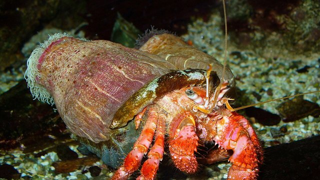

物理5–11 岁约 10 分钟
大螯举起来晃才看得见信号，两只一样大就认不出？
同一只纸招潮蟹。大螯举起来晃才看得见信号；两只一样大就认不出。差在大螯举起来晃还是两只一样大，不在换成寄居蟹换壳，也不在普通蟹两只螯夹。本页不追真的，观察后洗手。
同一只纸招潮蟹，举螯一回，两只一样大一回


大螯举起来晃才看得见信号。两只一样大就认不出。先点「举螯」，再点「试一试」。
先猜一猜，再试
第 1 题：调到 80，大螯举起来晃，看得见信号吗？
押一个。把滑条调到 80，再点试一试。
第 2 题：调到 10，两只一样大，还看得见信号吗？
押好后滑条 10，再试一试。
第 3 题：调到 50，刚好一半，算看得见信号了吗？
押好后滑条 50，再试一试。
同一只纸招潮蟹：大螯举起来晃才看得见信号；两只一样大就认不出
先点「举螯」再点「试一试」，看看得见信号。再点「一样大」试一次，看是不是认不出。
纸招潮蟹始终是同一只。差在大螯举起来晃还是两只一样大，不在换成寄居蟹换壳。也不在普通蟹两只螯夹。大螯举起来晃才看得见信号，一两只一样大就认不出。
舞台上的「看得见信号」是本页比较尺子：滑条 ≥ 80 才算看得见信号。刚好 50 还不够。不要追真的，观察后洗手。本页用纸板。
大螯图鉴
点一张，对照舞台：谁让大螯举起来晃才看得见信号，谁让两只一样大就认不出。
点一张图鉴，对照为什么大螯举起来晃才看得见信号。
猜一猜
同一只纸招潮蟹要看得见信号，靠的是举螯，还是两只一样大？
先押一个，再点「看答案」。
任务：举螯和两只一样大都试
先把滑条调到 80 或更高试一次，再调到 20 或更低试一次。两头都点过「试一试」即可完成。
开放式提示不会代替上面的正式任务。
尚未完成：先举螯试一次，或两只一样大试一次。
同一只纸招潮蟹，先举螯试一次，再对照试一次
舞台上只改一件事：大螯举起来晃有多够。同一只纸招潮蟹，先举螯试一次，看成不成；再对照试一次，看是不是认不出。这样比，才知道看得见信号靠的是举螯，不是「换一套就一样」，也不是「寄居蟹换壳」。
回家只带两句：「大螯举起来晃才看得见信号」；「两只一样大就认不出」。不要写成「越两只一样大越好看得见信号」。
够了，台上才看得见信号，不是谁许愿就成。
两只一样大以后认不出。
寄居蟹换壳另开；本页比大螯举起来晃还是两只一样大，两句不要并成一句。
不追、不抓，本页用纸板对照。
这在教什么：孩子要能对举螯和两只一样大各报成不成，并否定「寄居蟹换壳」和「换一套就一样」。
- 举螯那一次，看得见信号了吗？
- 两只一样大，台上还看得见信号吗？
- 本页要比寄居蟹换壳吗？
- 能去追真招潮蟹吗？
看得见信号靠大螯举起来晃，不是寄居蟹换壳，更不要追真的
大螯举起来晃，才看得见信号。这一招只在「大螯举起来晃还是两只一样大」时才成立。一两只一样大，眼前就剩认不出。
不要把它讲成「越两只一样大越好看得见信号」或「换成别的动物就能成」。寄居蟹换壳是另一套。普通蟹两只螯夹认不出。
不追真的，不抓。看完按二十秒洗手。本页用纸板。
给家长的问题
- 举螯那一次，孩子指的是大螯举起来晃，还是在说「它比较猛」？让他再指一次大螯举起来晃。
- 两只一样大，为什么认不出？哪一句四岁听得懂？
- 如果他说「寄居蟹换壳就能进」——寄居蟹换壳是哪一笔账？本页少的是举螯还是寄居蟹换壳？
- 寄居蟹换壳和招潮蟹大螯，差在「寄居蟹换壳」还是「大螯举起来晃」？
- 不追真的、看完洗手：红线怎么说？本页能当乱追真动物的课吗？
背后的原理
舞台上不写这些词，留给孩子用眼睛看。招潮蟹（Uca）大螯举起来晃，对面才看得见信号。两只一样大就认不出。不是普通蟹那种两只螯夹东西。不要抓真蟹。本页用举螯 ≥ 80 当门槛，≤ 20 算两只一样大。刚好 50 不算。
这不是寄居蟹换壳说明书，也不是普通蟹两只螯夹。寄居蟹换壳另开，都不要并进本页第一完成句。
人去追活招潮蟹会让它受惊。观察后洗手。舞台用纸板。
接下来可以去
带走句：大螯举起来晃才看得见信号；两只一样大就认不出。招潮蟹观察站看真举螯。